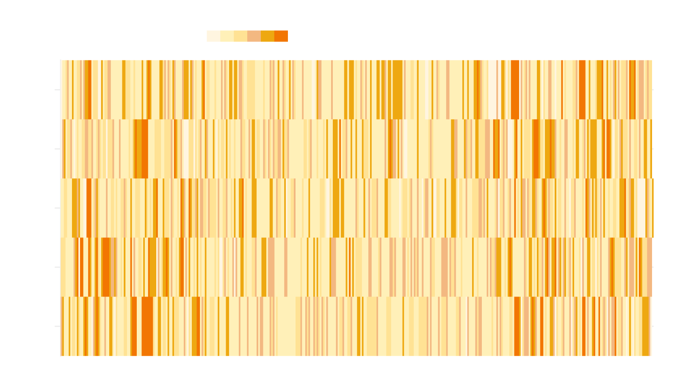

<h1>Air Quality in Beijing, China from 2011 to 2014</h1>
<!-- Generated by ai2html v0.110.0 - 2022-04-20 23:52 -->
<!-- ai file: Beijing air quality edited.ai -->
<style media="screen,print">
	#g-Beijing-air-quality-edited-box ,
	#g-Beijing-air-quality-edited-box .g-artboard {
		margin:0 auto;
	}
	#g-Beijing-air-quality-edited-box p {
		margin:0;
	}
	#g-Beijing-air-quality-edited-box .g-aiAbs {
		position:absolute;
	}
	#g-Beijing-air-quality-edited-box .g-aiImg {
		position:absolute;
		top:0;
		display:block;
		width:100% !important;
	}
	#g-Beijing-air-quality-edited-box .g-aiSymbol {
		position: absolute;
		box-sizing: border-box;
	}
	#g-Beijing-air-quality-edited-box .g-aiPointText p { white-space: nowrap; }
	#g-Beijing-air-quality-edited-Artboard_1 {
		position:relative;
		overflow:hidden;
	}
	#g-Beijing-air-quality-edited-Artboard_1 p {
		font-family:arial,helvetica,sans-serif;
		line-height:19px;
		height:auto;
		opacity:1;
		letter-spacing:0em;
		font-size:16px;
		text-align:left;
		color:rgb(170,170,170);
		text-transform:none;
		padding-bottom:0;
		padding-top:0;
		mix-blend-mode:normal;
		font-style:normal;
		position:static;
	}
	#g-Beijing-air-quality-edited-Artboard_1 .g-pstyle0 {
		line-height:18px;
		font-size:17px;
		text-align:right;
		color:rgb(51,51,51);
	}
	#g-Beijing-air-quality-edited-Artboard_1 .g-pstyle1 {
		height:19px;
		color:rgb(51,51,51);
	}
	#g-Beijing-air-quality-edited-Artboard_1 .g-pstyle2 {
		height:19px;
		text-align:right;
		color:rgb(51,51,51);
	}
	#g-Beijing-air-quality-edited-Artboard_1 .g-pstyle3 {
		height:19px;
		text-align:justify;
	}
	#g-Beijing-air-quality-edited-Artboard_1 .g-pstyle4 {
		line-height:20px;
		font-size:17px;
		color:rgb(109,109,109);
	}
	#g-Beijing-air-quality-edited-Artboard_1 .g-cstyle0 {
		font-size:15px;
	}

</style>

<div id="g-Beijing-air-quality-edited-box" class="ai2html">

	<!-- Artboard: Artboard_1 -->
	<div id="g-Beijing-air-quality-edited-Artboard_1" class="g-artboard" style="max-width: 816px;max-height: 451px" data-aspect-ratio="1.809" data-min-width="0">
<div style="padding: 0 0 55.2819% 0;"></div>
		
		<div id="g-ai0-1" class="g-chart g-aiAbs" style="top:7.3155%;right:84.4524%;width:13.1127%;">
			<p class="g-pstyle0"><span class="g-cstyle0">AQI</span> Category</p>
		</div>
		<div id="g-ai0-2" class="g-chart g-aiAbs g-aiPointText" style="top:9.524%;margin-top:-11px;left:43.2055%;width:99px;">
			<p class="g-pstyle1">Hazardous</p>
		</div>
		<div id="g-ai0-3" class="g-chart g-aiAbs g-aiPointText" style="top:9.524%;margin-top:-11px;right:71.6983%;width:61px;">
			<p class="g-pstyle2">Good</p>
		</div>
		<div id="g-ai0-4" class="g-chart g-aiAbs g-aiPointText" style="top:23.4899%;margin-top:-11px;left:4.0219%;width:58px;">
			<p class="g-pstyle3">2010</p>
		</div>
		<div id="g-ai0-5" class="g-chart g-aiAbs g-aiPointText" style="top:39.0075%;margin-top:-11px;left:4.1365%;width:56px;">
			<p class="g-pstyle3">2011</p>
		</div>
		<div id="g-ai0-6" class="g-chart g-aiAbs g-aiPointText" style="top:54.5251%;margin-top:-11px;left:4.0219%;width:58px;">
			<p class="g-pstyle3">2012</p>
		</div>
		<div id="g-ai0-7" class="g-chart g-aiAbs g-aiPointText" style="top:70.0428%;margin-top:-11px;left:4.0219%;width:58px;">
			<p class="g-pstyle3">2013</p>
		</div>
		<div id="g-ai0-8" class="g-chart g-aiAbs g-aiPointText" style="top:85.5604%;margin-top:-11px;left:4.0219%;width:58px;">
			<p class="g-pstyle3">2014</p>
		</div>
		<div id="g-ai0-9" class="g-chart g-aiAbs" style="top:94.2141%;left:7.1078%;width:6.9853%;">
			<p class="g-pstyle4">Jan</p>
		</div>
		<div id="g-ai0-10" class="g-chart g-aiAbs" style="top:94.6575%;left:92.402%;width:6.25%;">
			<p class="g-pstyle4">Dec</p>
		</div>
	</div>

</div>

<!-- End ai2html - 2022-04-20 23:52 -->
